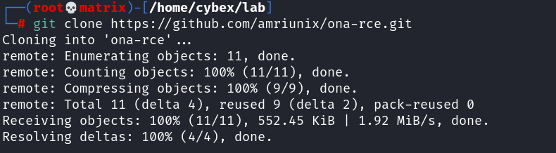

ona-rce
Open Network Admin - Remote Code Execution
ONA Version - 18.1.1 is vulnerable
https://github.com/amriunix/ona-rce.git
The python program to check/run the exploit.

Target is Vulnerable
Foothold Successful..!!!!!